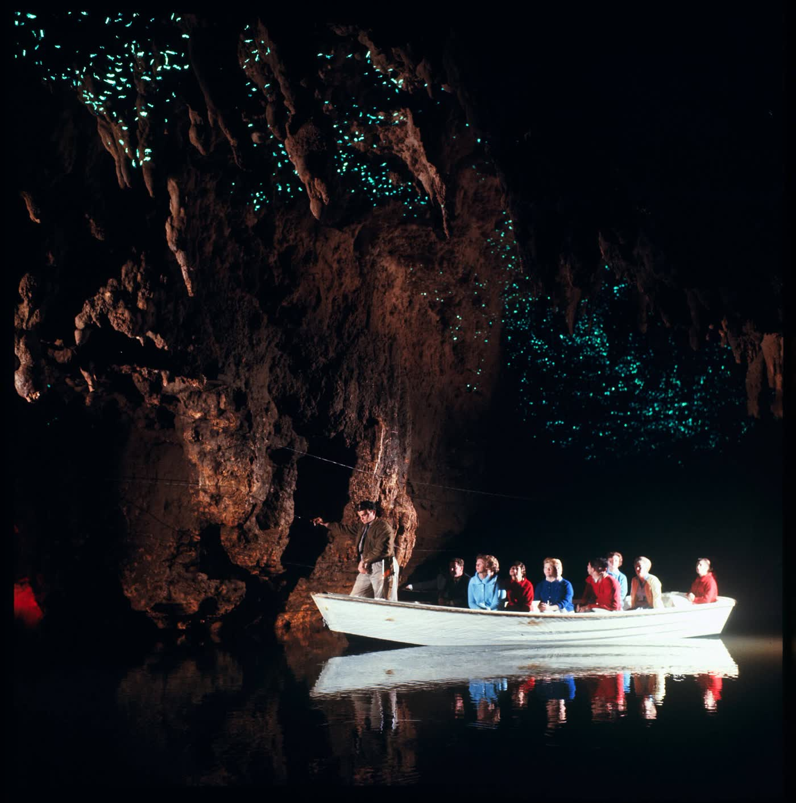
Cueva cerca de Waitomo
1.000.000
de años de antigüedad tienen los restos de vertebrados terrestres hallados en una cueva cerca de Waitomo.
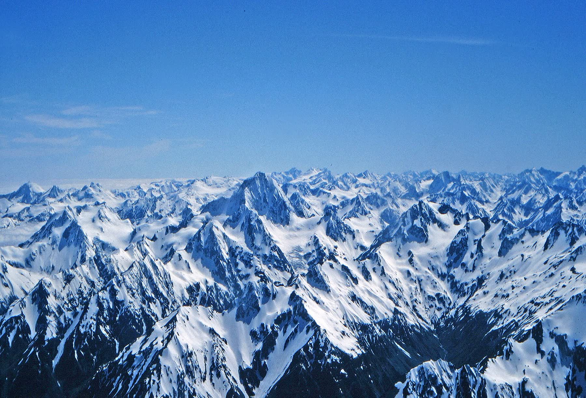
La protección de especies y biodiversidad en Nueva Zelanda.
Desplázate para descubrir ↘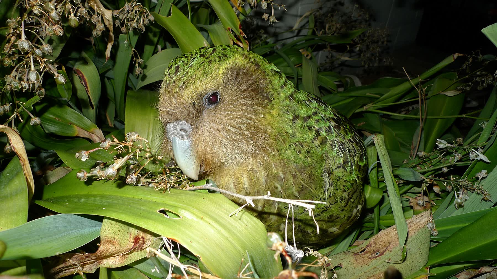
Las especies nativas y los programas de conservación.
El impacto de las especies invasoras y del cambio climático.
Una estrategia de protección de la biodiversidad para la comunidad.
Nueva Zelanda está en el suroeste del océano Pacífico, al sureste de Australia, y pertenece a Oceanía. Es un país insular formado principalmente por la Isla Norte y la Isla Sur, donde se concentra la mayor parte de su población.
Fondo azul, la Union Jack por su historia británica y cuatro estrellas rojas que representan la Cruz del Sur.
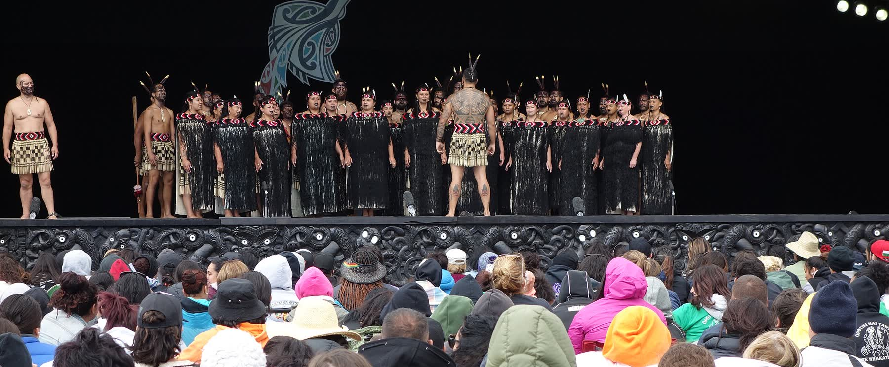
La cultura maorí pertenece al pueblo indígena de Nueva Zelanda y destaca por sus tradiciones, su lengua, su arte y su relación con la naturaleza y con la comunidad.
El cambio climático eleva las temperaturas, cambia los patrones de lluvia y calienta los océanos. Afecta a todo el país, pero las zonas costeras son las más vulnerables: sube el nivel del mar y crecen las inundaciones y la erosión.
Importa porque muchas comunidades dependen directamente de los recursos naturales para su alimentación, su economía y su bienestar.
El océano alrededor de Nueva Zelanda se calienta un 34 % más rápido que el promedio mundial.
Subió la temperatura del mar en cada década entre 1982 y 2023.
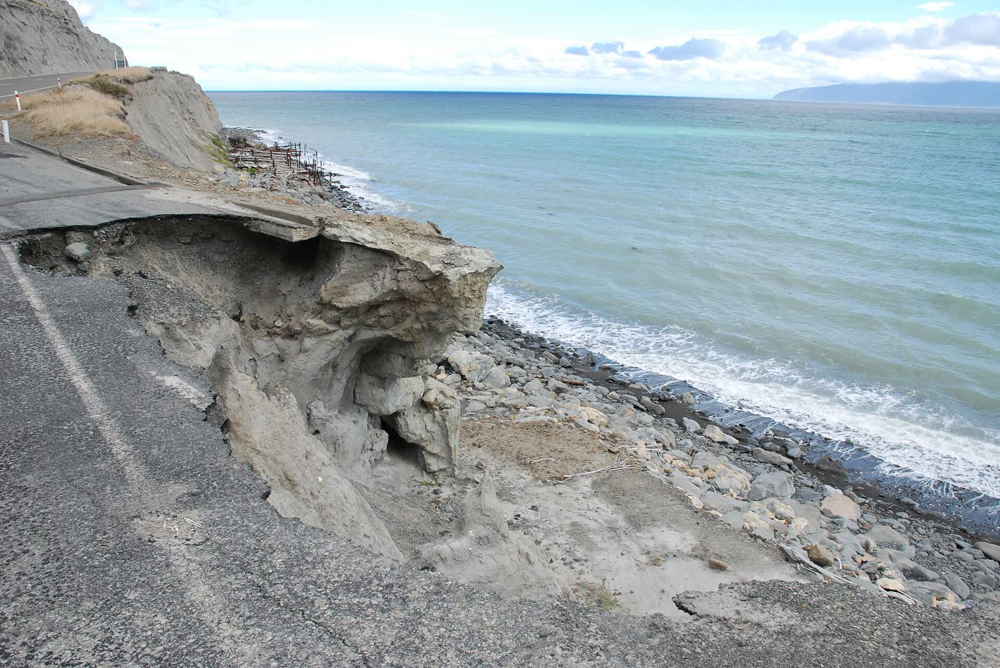
podría subir el nivel del mar para 2050, respecto de 2005. Más inundaciones y erosión en la costa.
Estas amenazas requieren medidas urgentes de adaptación y conservación.

de años de antigüedad tienen los restos de vertebrados terrestres hallados en una cueva cerca de Waitomo.
nuevas especies marinas documentadas en las profundidades del océano, cerca de la Isla Sur.
Estos hallazgos amplían lo que se sabe sobre la evolución y la diversidad de sus ecosistemas. Pero la biodiversidad también enfrenta amenazas que ya cobraron especies.
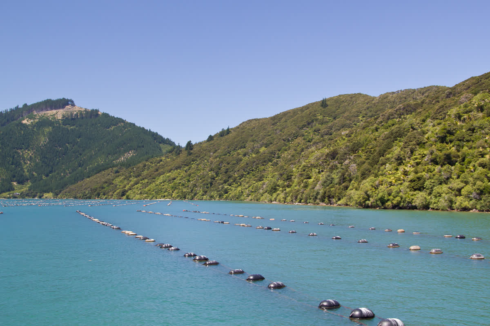
Forma grandes acumulaciones de incrustaciones en aguas salobres.
Perjudica los cultivos y las granjas de mejillones.
¿Cómo responderá la biodiversidad de Nueva Zelanda al cambio climático a largo plazo?
Así lo reconoce la estrategia nacional de biodiversidad: proteger especies y ecosistemas necesita coordinación y compromiso de todos.
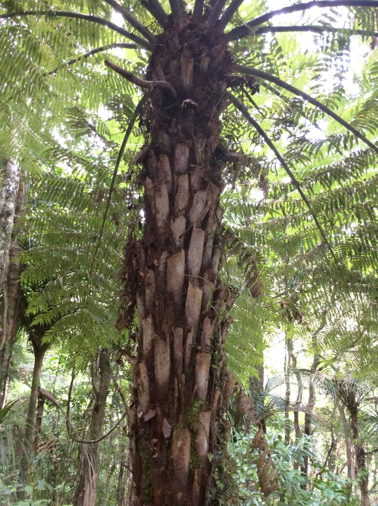
Un modelo de colaboración que busca equilibrar las necesidades sociales, económicas y ambientales.
Coordina programas de protección de la biodiversidad, restauración de hábitats y recuperación de especies amenazadas, guiado por estrategias nacionales.
La responsabilidad de cuidar y proteger la naturaleza para las generaciones presentes y futuras.
Con este concepto, las comunidades maoríes participan en proyectos de restauración y protección de especies.
Organizaciones ambientales, científicos, empresas y grupos comunitarios suman esfuerzos en distintas iniciativas.
Resultado: recuperación de especies y vegetación nativas. Reto: un costo alto, mucho tiempo y una necesidad constante de financiamiento, investigación, seguimiento y participación social.
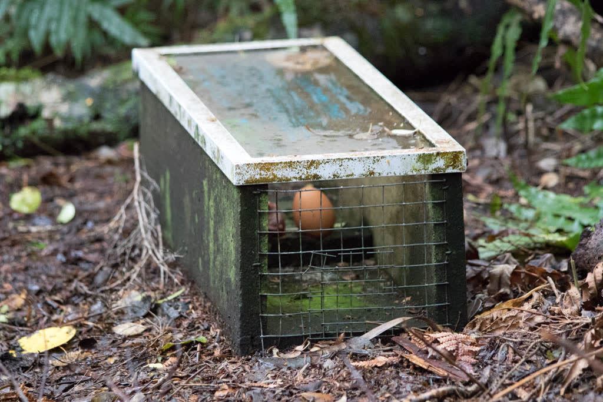
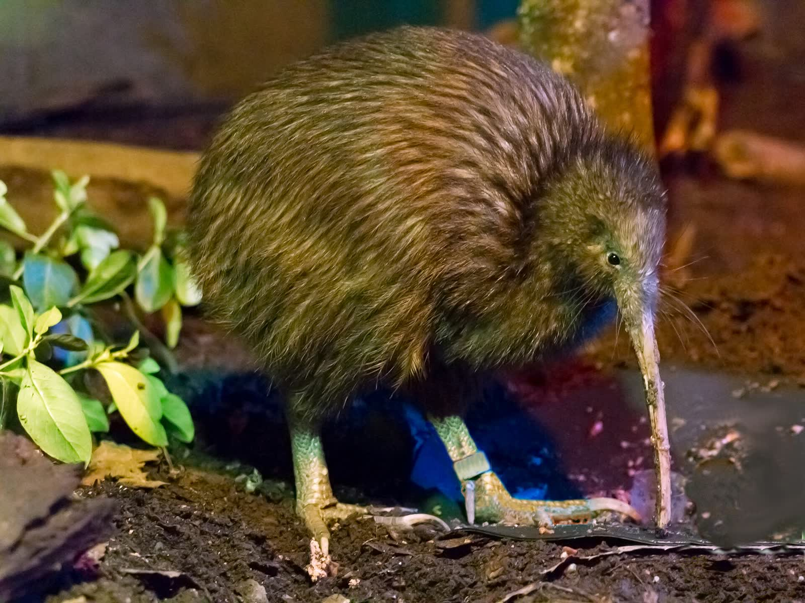
de las especies de Nueva Zelanda son endémicas: evolucionaron aisladas y no viven en ningún otro lugar. Muchas están amenazadas.
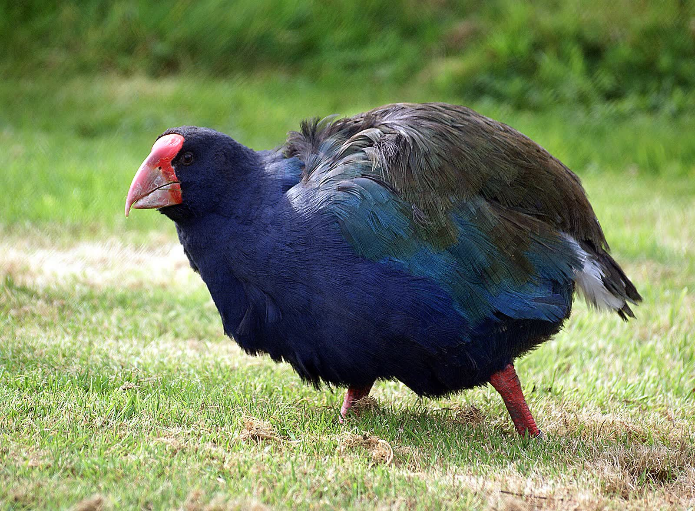
Una estrategia hacia 2050 que une ciencia moderna y conocimiento indígena.
La apoyan programas universitarios de recuperación de aves y combina investigación científica, políticas públicas, conocimientos tradicionales y participación ciudadana.
Quiere mantener esa imagen, que atrae turismo e inversión, cuidando la economía y los empleos.
Priorizan proteger las especies nativas, restaurar los ecosistemas y reducir las amenazas ambientales.
Necesitan conservar los recursos naturales de los que dependen en su vida diaria.
En agricultura, pesca, turismo y silvicultura deben equilibrar sus intereses económicos con la responsabilidad ambiental.
Conservar las especies nativas y los ecosistemas, y reducir la contaminación y las especies invasoras.
Cuando las medidas de protección limitan actividades productivas o implican costos elevados.
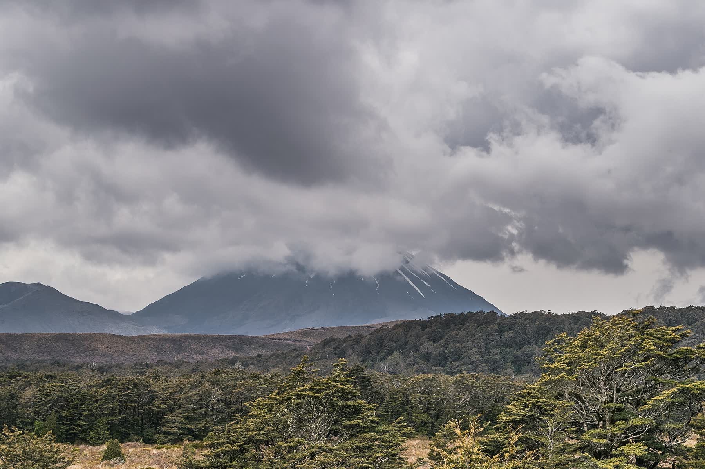
¿Cómo puede Nueva Zelanda proteger sus especies y ecosistemas sin perjudicar innecesariamente la economía ni el bienestar de sus comunidades?
Fernando, Valentina y Alberto
Busca reducir la pérdida de especies endémicas y mantener saludables los ecosistemas de Nueva Zelanda.
Las especies amenazadas, las invasoras y las causas de su deterioro.
Lo que el programa quiere lograr.
Y organizar las acciones de restauración.
Con la participación de sus comunidades y sus conocimientos tradicionales.
Espacios destinados a la conservación.
Combate las principales amenazas y promueve la educación ambiental.
Falta de recursos, contaminación, cambio climático, pérdida de hábitats y expansión de especies invasoras.
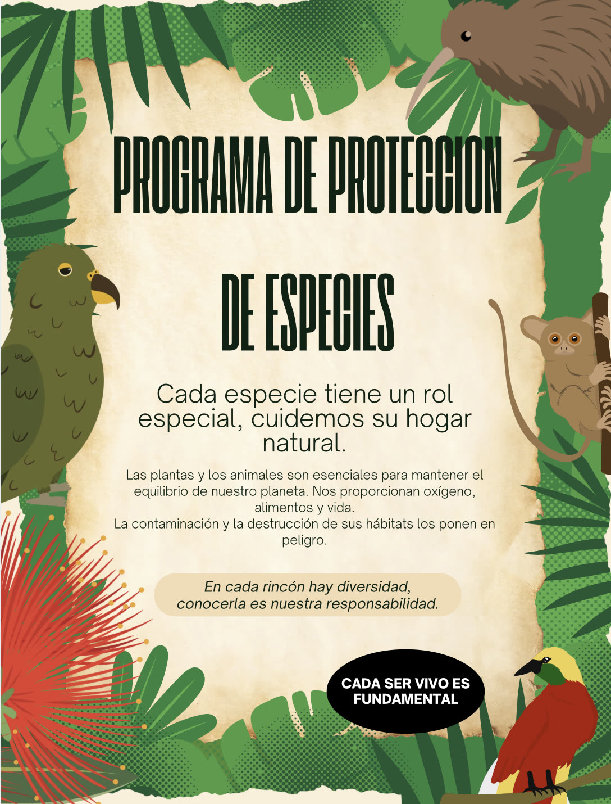
especies nativas en peligro de extinción
especies en peligro de extinción, y más de 200 que ya se extinguieron
Cada cuadro = 100 especies en peligro100 especies extintas
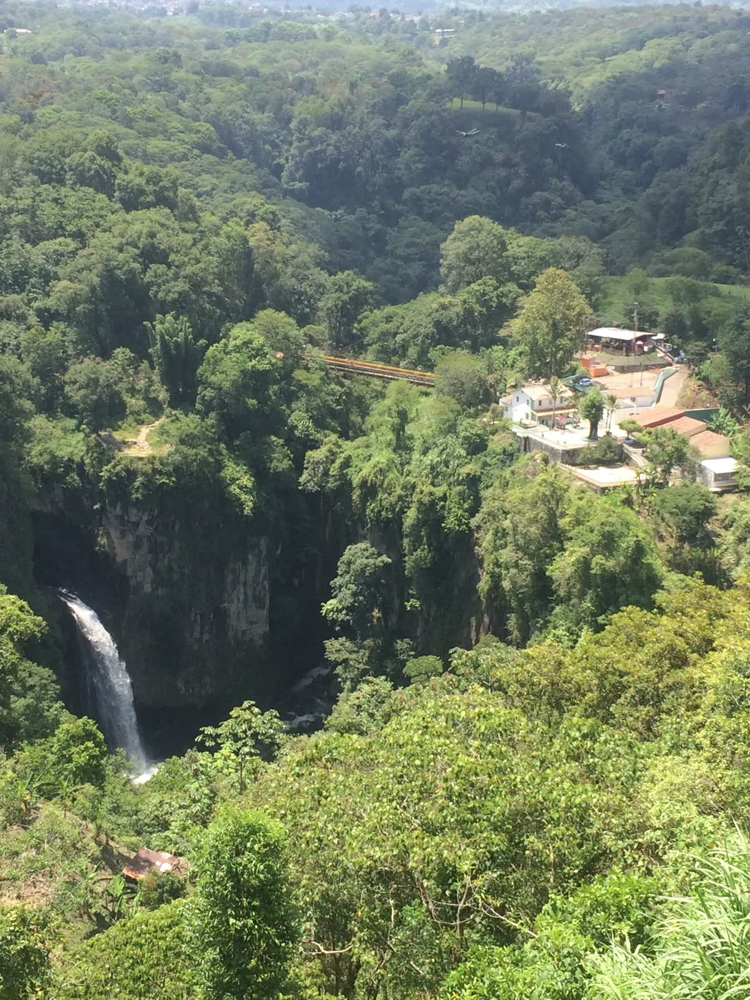
Ambos territorios comparten el desafío de proteger sus especies nativas.
Veracruz tiene una gran diversidad de ecosistemas y especies, pero algunas enfrentan la pérdida de hábitats, la contaminación, el cambio climático y otras actividades humanas. Por eso hacen falta educación ambiental y participación ciudadana.
Como comunidad escolar del Bachillerato Internacional (NIC), tenemos que tomar acción: así relacionamos un problema global con nuestra realidad local.
Una campaña escolar para que la comunidad conozca las especies amenazadas de Nueva Zelanda y de Veracruz, y adopte hábitos que reduzcan residuos y protejan los ecosistemas.